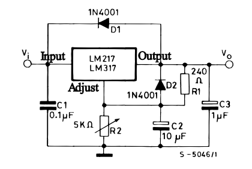

Introduction
Our project is an integration of software, hardware, and mechanical design in the form of a playful cat robot.
We used a combination of the RP2040, motors, and 3D-printed parts to create a cat-shaped robot that can sense a toy in front of it, get into pouncing position, and drive towards the toy. It utilizes IR sensors and a receiver to detect the toy as well as both DC and servo motors to move. The motivation behind this project was to find something entertaining and interactive that utilized all of our skills, as we come from diverse backgrounds. It was a fun challenge to integrate all of the hardware parts into the mechanical housing pieces we made from scratch while still optimizing the software control of the whole system. Additionally, though the robot currently only has one action in response to sensing the transmitter, we made it easy to add more actions and have a wider range of motion.
A demonstration of this robot can be found here.
High Level Design
The idea of our project was mostly from a place of us wanting to create a robot that could perform simple tasks in response to some user input or outside stimuli. Creating it in the likeness of an animal was mostly just personal preference, but does bear resemblance to robotic pets that are commercially available and popular with children. As it follows, we wanted it to respond to some sort of object it sensed in front of it, and an IR transmitter/sensor made the most sense in terms of budget/time constraints and compatibility with the RP2040. Overall, we wanted to learn more about creating a tangible, physical object like a robot and all of the design considerations that come with integrating the product’s systems together.
Inspired by the design of a real cat, we wanted the robot to respond to our IR signal the same way a cat would to a toy. When a cat spots a target, its eyes widen and it crouches down into a ready position, before it quickly leaps at its target. We wanted to replicate this behavior by having the cat observe a toy (receive an IR signal), dilate its eyes, and get into a pouncing position before moving forward. We then broke this down into hardware that we required: an LCD screen to display dynamic eyes, DC motors with gearboxes to drive legs forward, IR receiver for detection of toy, and servo motors at leg joints to allow different poses such as pounce position. To allow easy posing based on just rotation of the servos, we wanted one set of legs to have freely rotating wheels. We decided to have the rear legs be driven by DC motors and gearboxes while the front legs had freely spinning bearing wheels, to reflect how cats will push off with their rear legs to pounce.
For the most part, we did not have to make many difficult decisions for hardware/software tradeoffs. Some notable implementations were the LDO and delay introduced into our servo. We used two 9V batteries as our power sources for the robot, and we wanted to have it more around 5V so as not to cause any damage to our components. It logically followed that we would have our fail safe right after the batteries and right before anything was sent into the board, so we had our LDO and a set of switches on the board. Additionally, we had one servo that was slightly different from the other three servos, and we did not realize the delay until it was permanently fixed to the body of the robot. As such, we introduced a delay in the other motors in the software to have them more aligned. Due to the design stage at which we realized this, there was not enough time to reprint a body and source four additional (and identical) motors, so handling the issue in software was the optimal choice given our time constraint. However, we found that our solution worked well and was the next best option to replacing all of the parts. To implement the user controls, we connected an IR receiver to the front of the cat body which would send an active low signal to the Pico when activated. Initially, we planned to detect the low signal and trigger an action sequence, however IR LEDs would only be detected by the receiver for a short time and IR remotes sent a sequence of pulses. Both of these signaling schemes were difficult to detect because of their quick changes in pin states, which we overcame with software processing that detected falling edges instead of low levels and allowed the system to interrupt on those triggers. Overall, our project was a hardware-heavy device with software mostly being used to control all of the physical components.
In terms of prior art related to our project, as mentioned before, it bears similarity to many robotic pets out on the market. An early patent of an “Intelligent Pet Robot” depicts a robot equipped with a motor for movement, IR transmitters & sensors for evading objects, sound sensors, and various operation modes [1]. Though our robot only performs the “pounce” sequence when presented with a toy, it could very well have implementations for other operations and inputs. In regards to specific copyright laws and trademarks with the concept of a robotic pet, the idea in and of itself is free to be expanded upon. There are hundreds of iterations of robotic pets being sold, whether they are standalone, interactive, integrated into video games, etc. That said, we would not be able to take the exact likeness, name, or design of an existing robotic pet on the market (or patented); however, our project is very fundamental in nature and is of our own original design. On a deeper level, the components we used and the manner in which we used them do not have any problems with copyright or trademark infringement, as they are quite simple and very commonly used in many robotic systems. If we were to implement more features and clean up the design, we would just have to make sure that it was not too similar to any existing specific products.
Mechanical Design
The cat consists of six main components, a head, a body, and four legs. The head is made up of two pieces, a face plate with a window for a LCD screen and the hollow head with a neck hole allowing wires to connect from the body to the LCD. The face plate fits on to the front of the head and can be secured with glue or tape. The body piece houses the breadboard containing a RP2040 and the primary circuitry and power supplies (two 9V batteries). It has an organic shape to resemble a cat, with rectangular cutouts on the inside to fit a breadboard, servo motors, and batteries. The body has two halves, a bottom half which houses all components, and a top half which has a sliding fit mechanism to attach to the bottom and cover the circuitry. The bottom half has a hole at the neck that allows wires to pass into the head and an insert that mates with the head piece. There are holes on the four corners that servo horns can face out of to attach the legs, and a gap is positioned above the holes to allow free movement of wires leading to DC motors in the legs. There is another hole at the front of the body for an IR receiver, which allows the cat to detect IR signals in front of it. The legs are each made up of two halves joined by magnets, which allows components to be placed inside. Each leg has a hole on the side facing the body which the servo horns can be attached through. Back legs have holes at the bottom for the axles of DC motor gearboxes, and front legs have free spinning bearing wheels attached to them [2]. When fully assembled, wheels can be attached to the DC axles poking out of the leg holes.
Program/Hardware Design
High Level Program Details
The main C file is organized in the following way. Library imports at the top, variables (organized by hardware components), functions, interrupts, and threads. The order of software execution begins with the main function which sets up GPIOs for the servos, the IR receiver, the DC motors, and the LCD screen. Additionally, the robot is set to a standing position by commanding the servo motors to specific angles and an interrupt is set up to trigger if the IR receiver pin detects a rising or falling edge using IRQ with callback. Next, the threads are scheduled. The scheduling order is the pounce thread (pt_pounce; this thread executes the sequence of actions for pouncing if a variable [flag] indicating target detection has been set high), then the LCD update thread (pt_anim; this thread updates the LCD screen to blink on a regular cycle. Although actual cats do not frequently blink, we chose to include this feature as it resulted in a cuter robot). These threads continuously run unless the interrupt is activated. Upon activation of the interrupt, the IR_interrupt() function is called which sets the target detection variable [flag] high. The next time the pounce thread runs, it executes the pounce_seq() function which controls the robot to rotate its legs, dilate its pupils, and drive forwards. At the end of the sequence, the flag variable is set low.
Within the pounce function, we chose to use the sleep command rather than a non-blocking yield command to prevent the robot from activating other features during the pounce sequence. This ensured the legs or LCD screen would not switch quickly between different states. We decided sleeping made the most sense since we do not require other threads to be run or IR interrupts to be detectable during this predetermined sequence.
Within the pounce sequence function, we were hoping to include PID control. However, there were a few limitations to the design. In using IR for target detection, we lost directionality as the IR receiver activates in the same way regardless of source direction. We initially planned to have multiple IR receivers on the cat to determine the source location based on which receivers were activated. However, due to issues getting a single IR receiver working, printing time, and IR transmitter functionality issues, we changed our scope to enable working IR functions in a reduced manner. If we had been able to get IR direction measurements, PID would have been implemented to allow the robot to drive to the target with the help from an accelerometer and/or gyroscope for orientation. Due to these decisions, we settled with the robot driving forward for a set amount of time. This sometimes led to the cat driving past the toy, just as a real cat can get too excited and miss its target.
High Level Hardware Details
The robot electronics consisted of one IR receiver, two DC motors, one DC motor controller, four servo motors, one LDO, one Raspberry Pi Pico, and one LCD module containing an LCD screen and driver. The LDO is used to regulate a 9V battery output to 5V which powers the Pico, the DC motor controller, and the IR receiver. The servo motors are powered directly by 9V batteries and controlled by PWM outputs from the pico. The DC motor controller takes in low current signals from the Pico and sends signals to the DC motors. Power is supplied to the DC motor controller by the 5V LDO regulator. The IR receiver is powered by the 5V LDO regulator and outputs an active low signal to the Pico.


Low Dropout Voltage Regulator
The LDO voltage regulator used was an LM317T as shown below. R2 was changed to 1.5kOhms and R1 was modified to 500 Ohms. The output maintained a stable 5V with a 9V input from a battery.

LCD Screen
The 2.2" TFT LCD screen is connected to a driver board with 10 pins, of which we used 6: ground, Vin, D/C, LCD chip select, MOSI, and serial clock. These connected directly to the Pico ground, 3v3 power, and 4 GPIO pins respectively. We used the SPI interface to communicate data between the Pico board and the LCD screen. The library written by Parth Sharma as part of a past ECE5730 project is a modified version of the Adafruit Arduino library for the TFT LCD screen [3]. We used this library to create shapes of the cat’s eyes on the screen. The screen initializes to a black background and draws two eyes, represented by green rounded rectangles with a white outline. The pupils are independently drawn and are able to move and change in size based on the positioning of the midpoint coordinate between the two. As mentioned, the pounce function causes pupils to dilate, increasing their size and shifting their position to stay central within the eye. In its idle state, the cat also blinks on regular intervals, which is a transition between an open eye frame and a closed eye frame. We initially animated the blink, but the eye took too long to close and the animation could lead to errors when pounce is triggered during an intermediate frame. The fast blink looks much better visually. To optimize timing, eyes are not redrawn every frame, only when their appearance is updated such as eyes closing or opening, as well as when pupils dilate and contract.
IR Receiver and Transmitter Toy
The IR receiver module contains a ground, voltage, and output pin. The output is connected to GPIO 14 as well as a LED between the output and input voltage for testing purposes. The receiver is wired through a hole in the body of the cat, positioning it on the cat’s front to detect IR signals in the same general direction that the head is facing. To send a signal, we built a “cat toy” which is two IR emitting LEDs and a resistor in series, powered by a 6V battery pack. We used a 6V supply to emit the strongest signal we could.
DC Motors
The DC motors were operated through a motor controller which allowed low current signals to control high current outputs. Both motors used the same motor output of the controller but had opposite polarities. This was due to the opposing orientation of the two motors as they were connected on either side of the cat. The motor controller takes in a differential digital signal to its AIN1 and AIN2 pins. If AIN1 and AIN2 are both low, the motors do not spin. If AIN1 is high and AIN2 is low, both motors spin forwards. If AIN1 is low and AIN2 is high, both motors spin backwards. Differential PWM can be used to control the speed of the motors, however for our application we used fully on or off signals. The motor controller also has a sleep pin which was always disabled so that the system would run if it received control signals from the Pico.
Servo Motors
The servos were operated using PWM signals directly from the Pico. Sending a PWM signal with a set duty cycle would send the servo to a specific angle. In software, we wrote a function that takes in an angle, maps it to the corresponding duty cycle and sets that duty cycle for the PWM output controlling the commanded servo. We desired both front servos to move together (and both back servos to move together) but due to their opposing orientation, the commanded angles on each side needed to be complementary. To achieve this, we wrote a function that moves both servos in the front to the same angle by writing the desired angle to one side and the complementary angle to the other. To set the duty cycle, we used functions from this library by Thomas Kleist [4].
Results of the Design
The design did not have a lot of components or processes that were potentially safety hazards, but we did run into some issues with the power sources we were using. In the final iteration, we were powering all of the components on the robot with two 9V batteries (one battery powered the servos, and the other powered the Pico, IR receiver, and DC motors). These proved to have a much higher voltage and current supply than what we needed for everything but the servos, which might have damaged some of the components. To prevent this, we first looked into lower power sources available to us. We had battery packs that were powered off of AA batteries (1.5V), which could either provide 6 or 4.5V. However, they were not only much heavier than the 9V batteries, but they both ended up providing insufficient power. The 4.5V caused the components to run too slowly or not at all; the 6V needed the LDO so as not to overheat the components, and our LDO had a threshold that needed voltage supplied to be over 6V to properly attenuate. Thus, we decided to work with the 9V batteries. To prevent damage to the components, we implemented the LDO to attenuate the power to a steady 5V before it was passed into the Pico, IR receiver, and DC motors. Additionally, we added switches for both of the batteries to prevent accidental shorting and just make turning the robot on and off easier. Finally, in order to keep our cat happy and not have him attack us, we gave him treats and let him take many naps.
The servo motors had accuracy issues caused by jitter from the PWM commands. We believe this was due to a modified moment of inertia once we added the 3D printed legs to the robot. Within each servo there is a PID controller with fixed parameters, however these were not designed for use with our specific application. One possible modification that could have been explored would be creating our own PID controller for the PWM signal that reduces the jitter in steady state. Additionally, one of the servos was a slightly different model than the other ones, which caused it to have a slight delay in comparison. We solved this by implementing a delay in the other three servos for 150 ms, which helped solve the issue. It could have been further improved by having all of the same servos, but without time constraint, the delay worked well enough.
To operate the robot, all that is needed is the robot and a source of IR transmitting. We used both our IR transmitter toy and an IR remote for an LED strip. When both switches in the body are in the “on” state, the robot will power on as indicated by its face lighting up. Regardless of any stimulus or action, the eyes will blink periodically. When an IR transmitter is presented in front of the robot, it will then go into the pounce sequence and drive forward. Both our IR sources worked well, but the remote seemed to have a slightly better range and consistency than the transmitter circuit. The transmitters on the toy circuit needed to be oriented such that the tops were pointed at the receiver and their continuously on operation allowed for a lower instantaneous transmitted power, which made it slightly more difficult to use. Overall, the usability of the cat is intuitive and does not require additional training or deeper understanding of the device.
Conclusion
Overall, we are satisfied with what we were able to complete with the constraints of time, money, and shipping/manufacturing times at hand. We reached our target goal of being able to have the robot drive forward (utilizing the DC motors), crouch in a pounce position (utilizing the servo motors), and blink/have its eyes react to an object (utilizing the LCD screen). However, there are several considerations that we would have liked to reach as stretch goals and certain functionalities that we did not have the time or resources to get to implementing. Unconstrained, the first thing we would reconsider is the entire weight of our robot. With the way we built it, the robot was only just able to perform the crouch and lift itself back up. Any additional weight would have made it collapse under its own weight and ultimately render it unable to drive. We had printed a body top portion to cover all of the hardware components, but it ended up being too heavy to use in the final demo. Therefore, if we were to retry the project, we would pick hardware components more strategically (smaller breadboard, stronger motors, lighter and stronger power source) and print the body such that it was smaller and lighter (less infill, smaller general volume). Additionally, we would want to add more operation sequences to the robot. A stretch goal we had but did not get to was using DMA to have it make sounds – we might have it meow/growl upon sighting or chasing down a toy. Something else we had also discussed was adding more IR receivers all over the body so that it could sense an object from anywhere around it and turn to chase it rather than exclusively in front of it – this might involve the use of an accelerometer/gyroscope in addition to our existing hardware components. We might also use other sensors in addition to (or replacing) IR such as sound or LiDAR sensors; this way, we would be able to give it sound commands or make it go towards a specific area in the environment. One issue we also ran into was that one of our servo motors broke midway through the project, so we had to replace them with one that was slightly different from the other three. This turned out to have a slightly different latency/response time, which made the legs not respond in perfect sync. Though we remedied it as best we could with delays in the code, if we were to do the project again, we would make sure that all of the servos are identical. Finally, we would have liked to add some more aesthetic alterations to the robot body. We were happy overall with how the parts fit and moved together, but in addition to being able to add a body covering over the hardware components, we would add a tail and make the design sleeker.
In terms of intellectual property, we used libraries that were available in the public domain to power the LCD screen, servo motors, and DC motors. We used functions that were available in these libraries to send commands to the components, but we did not copy any code that would form how to use the functions. Nor did we have to sign any non-disclosure agreements for parts, code, or concepts. The functions for the LCD screen came from the TFT library [3], and we used the functions provided to draw the eyes and make them blink/dilate. We used libraries for setting the clock and controlling PWM output for the servo and DC motors [5, 6], with an additional servo library [4] for servo-specific functions. In terms of the design of the mechanical body, we mostly made the parts from scratch in Autodesk Fusion 360. The only parts that were sourced from an existing model were the front leg wheels, which were ball bearings found on Thingiverse made by user Bribro12 [2].
Due to copyright laws not applying to concepts [7], the idea of a robotic pet is not in and of itself in danger of a copyright infringement. The only way that it might be is if it copied the software, hardware, or even physical design of an existing robot cat that is patented to a close enough degree. Because our design is simple, there are no designs (to our knowledge) that are similar enough on the market (or in the patent phase) that would cause us concern of copyright infringement. For the same reason, we would probably not be able to pursue a patent for this idea, as patents tend to refer to things that are new, original, and/or an improvement on an existing patented design [7]; our project is very rudimentary and thus would fall under none of those categories. If we were to implement more features such as different actions, a special interface with a game, a motivation for the product (e.g. Toy for children? Helper robot?), or even a more finalized physical design, then we might need to look closer into existing robotic pets to ensure that any similarities would not warrant investigation into copyright infringement.
Appendix A: Permissions
Project on the Course Page
This group approves this report for inclusion on the course website.
Project on Course YouTube Channel
This group approves the video for inclusion on the course youtube channel.
Appendix B: Code
The main C code for this project can be found here
Appendix C: Team Member Contribution
Jeff: Report writing, IR receiver (software control), power budget, DC motor control chain (hardware, software)
Charlie: Report writing, IR receiver (software control), CAD/mechanical design, LCD screen display (hardware, software)
Lauren: Report writing, CAD/mechanical design, IR transmitter & receiver (software, hardware)
Appendix D: Bill of Materials
Appendix E: References